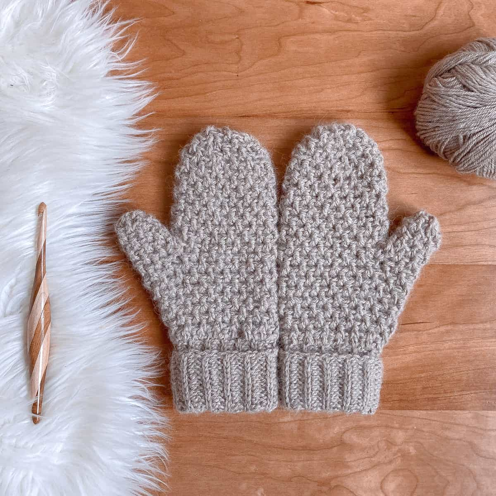

Mittens
Materials:
Worsted weight yarn (around 192 yards for a pair of adult mittens)
Crochet hook (size H/8 or 5mm)
Yarn needle
Scissors
Optional: stitch marker
Stitches used:
Chain (ch)
Single crochet (sc)
Half double crochet (hdc)
Increase (inc) - typically done as two single crochets in one stitch
Gauge:
4 hdc x 4 rows = 1 inch x 1 inch (gauge swatch recommended to adjust for your tension)
Size:
Adult small (adjust foundation chain and number of rows to make larger or smaller)
Instructions:
Cuff:
Chain 15 (or adjust for your desired wrist circumference).
Work in sc or hdc in back loops only for desired cuff height (around 2-3 inches). You can find tutorials for working in back loops only online.
Fasten off, leaving a long tail for sewing.
Hand:
Join yarn at the base of the cuff.
Work hdc around the entire cuff, working in both loops now.
Continue working hdc in rounds, increasing at regular intervals around the hand to create a slight curve (search for "mitten increase technique" for specific instructions).
Thumb Hole: When your hand reaches the desired height (around the base of your thumb), stop increasing and crochet straight for several stitches. Chain 6 to create a space for the thumb, then skip the corresponding stitches on the other side and continue working hdc in rounds.
Thumb:
Fasten off your yarn, leaving a long tail.
Attach yarn to the chain space you created for the thumb.
Work hdc in rounds around the thumb space, increasing at regular intervals on the sides until the thumb reaches its desired height (around 2-2.5 inches).
Shape the top of the thumb by decreasing stitches (search for "crochet thumb decrease technique" for specific instructions).
Fasten off and weave in the end.
Top Shaping:
With the hand piece still on your hook, continue working hdc in rounds, but decrease at regular intervals to close the top of the mitten (search for "mitten top decrease technique" for specific instructions).
Fasten off and weave in the end.
Finishing:
Use the yarn needle to weave in any remaining ends.
Optionally, add a decorative trim or embellishment around the cuff or thumb.
Tips:
You can use a stitch marker to mark the beginning of each round.
Try using a contrasting color yarn for the thumb to make it easier to see.
Be sure to adjust the number of stitches and rows based on your gauge and desired size.
There are many variations of crochet mitten patterns available online. Once you feel comfortable with this basic pattern, you can explore more advanced techniques and styles.
Here are some helpful resources to find more information and visuals:
Video tutorial for crochet mittens for beginners: YouTube crochet mittens for beginners: https://www.youtube.com/watch?v=FGXzBtIOn_8
Free crochet mitten pattern with multiple sizes: https://leftinknots.com/free-crochet-mitten-patterns/
I hope this helps you crochet your own cozy mittens!